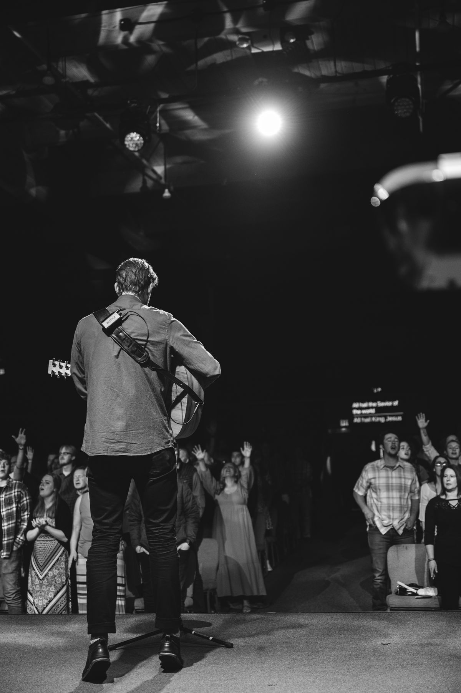

Session & touring guitarist — heavy music
Booked for the parts nobody else wants to play.
Lead guitar for studio sessions, remote records and tours — including the dep call that arrives 48 hours before the show. Everything is charted before the first rehearsal, every tuning is written down, and every tempo on this page loads straight into the trainer below.
- Shows played
- 240+
- Record credits
- 31
- Tunings covered
- 9
- Fastest dep call
- 48 hrs

The practice room
Tempo trainer
This is the metronome from my own practice room, rebuilt for the browser. The clicks are synthesised on your device — they demonstrate tempo, subdivision and accent, not guitar tone. Tone is what you book the session for. Set a tempo yourself, tap one in, or load a tempo straight from the setlist below. Nothing sounds until you press Start.
Quarter = 1 beat
Ready.
| Milliseconds per beat | 422.5 ms |
|---|---|
| Seconds per bar | 1.69 s |
| Click pattern | Quarter notes |
| Clicks per bar | 4 |
Current book
The setlist, kept as a spec sheet
Every engagement is tracked the way a setlist is: key, tuning, tempo, role, status. Press Load on any row and the trainer above takes that song's tempo and time signature.
| Track / production | Key | Tuning | Tempo | Role | Status | Trainer |
|---|---|---|---|---|---|---|
| Glass Cathedral Ashen Verdict — album session |
E min | Drop C | 142 BPM · 4/4 | Lead + solos | Delivered | |
| Iron Liturgy Kestrel Nine — festival dep set |
D min | D standard | 168 BPM · 4/4 | Lead | In rehearsal | |
| Low Mass Sister Anvil — remote record |
B min | B std · 7-string | 96 BPM · 4/4 | Lead + rhythm | Delivered | |
| Ash Wednesday Ashen Verdict — album session |
F♯ min | Drop A · 7-string | 210 BPM · 4/4 | Solos | Tracking | |
| Night Ferry The Long Defeat — UK tour |
G min | E♭ standard | 122 BPM · 4/4 | Lead | On the road | |
| Half-Life Waltz Sister Anvil — remote record |
C min | Drop C | 148 BPM · 3/4 | Lead | Delivered |
Fees
Rates, printed where you can read them
No quote forms that hide the number until the third email. These are the rates engagements are booked at; the notes underneath say exactly what moves them.
| Engagement | What it covers | Rate |
|---|---|---|
| Studio session day | Up to 10 hours in the room, full rig, charts prepared before the day | £450 / day |
| Remote track | One finished song: DI plus amped stems, two revision passes included | £140 / track |
| Dep show | One live date; the set learned from charts and stems, one rehearsal if the diary allows | £280 / show |
| Touring week | Seven days including travel and rehearsal days | £1,900 / week |
| Solo & feature writing | A composed solo section to brief, delivered as stems plus tab | from £220 |
What moves the price: travel and backline hire are charged at cost, agreed in advance. Chart preparation with under 72 hours' notice adds 25%. Tracking past midnight is billed as a further session. A composition buyout is priced per song, in writing, before tracking starts. The first 30-minute call about any engagement is free.
From the MD's desk
“Our guitarist broke his wrist on a Tuesday. Jonah played the Friday headline set — fourteen songs, three tunings — from charts he had written himself off the stems. We rebooked him for the rest of the leg before the encore.”
On the Iron Liturgy festival dep engagement — full case file on the Engagements page.
Booking
Dates go to whoever sends the setlist first
Send the dates, the setlist and the tunings. You will get a straight answer — yes with a rate, or no with a recommendation for who to call instead — within two working days.